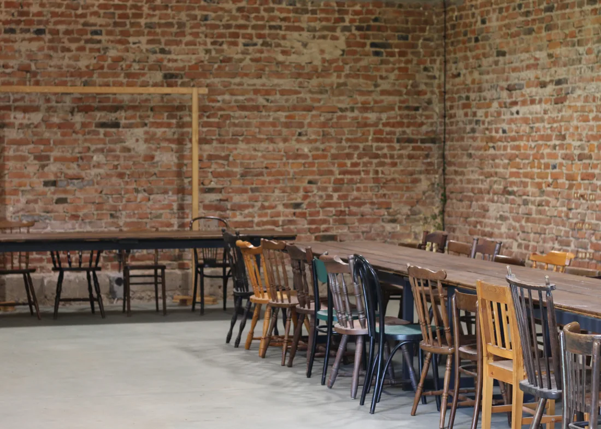
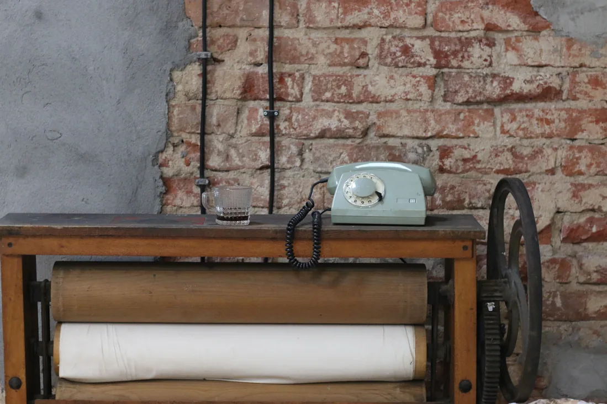

O NAS
Agata i Andrzej.
Gospodarze Goślic.
W Goślicach stworzyliśmy miejsce na przyjęcia, którego sami szukaliśmy w okolicy.

OD GOSPODARSTWA DO SPOTKAŃ
Zaczęło się od tego,
że lubimy świętować.
W sielskim klimacie, z najbliższymi. Brakowało nam takiej przestrzeni w okolicy, więc zaadaptowaliśmy stare gospodarstwo. Pierwsze przyjęcie odbyło się tu w 2022 roku.
Stodoła powstała ze starej cegły z Cekanowa. Dom stoi od 1937 roku. Nie chcieliśmy chować ich wieku. To właśnie on daje temu miejscu charakter.
AGATA
Od pierwszej rozmowy
do ostatnich ustaleń.
Agata zajmuje się pełną organizacją. To z nią omówisz szczegóły i podpiszesz umowę.
ANDRZEJ
Od rzeczy,
które muszą działać.
Andrzej dba o stronę techniczną, skoszony trawnik i to, żeby naprawić wszystko, co akurat tego wymaga. Dzięki temu stodoła i jej otoczenie są gotowe na kolejne spotkania.

DRUGIE ŻYCIE RZECZY
Starych rzeczy
nie wyrzucamy.
Krzesła, kryształy, książki. Zbieramy je, zanim ktoś uzna, że ich miejsce jest już tylko na śmietniku. Część stoi w domu, część trafiła do stodoły.
Lubimy PRL i stare meble. Dlatego zamiast jednego kompletu krzeseł są tu różne. Zamiast hotelowej anonimowości: ślady czyjegoś życia.
Obejrzyj nasze detaleZAPRASZAMY DO GOŚLIC
Poznajmy się
przy okazji wizyty.
Przyjedź obejrzeć Goślice i opowiedz nam, jakie spotkanie chcesz tu zorganizować.
Umów obejrzenie miejsca